Module Purpose
This source content presents Christianity as a living religious tradition shaped by Jesus, scripture, worship, theology, sacrament, community, and service. The chapter connects Christian ideas to the ways believers organize sacred time, interpret salvation, practice ethics, and participate in society.
The goal is to see how the chapter's major themes connect. Christianity is best studied as a lived tradition where gospel, Bible, Trinity, church life, sacraments, holy days, denominations, and Canadian public life all interact rather than standing alone.
Learning Outcomes
- Explain how Christianity is centered on Jesus, gospel, discipleship, and the Christian Bible.
- Differentiate the Old Testament and New Testament and explain how Christians use both as scripture.
- Describe the Trinity, crucifixion, resurrection, grace, and salvation using accurate Christian vocabulary.
- Explain how Christian ethics connect the teachings of Jesus to compassion, service, forgiveness, and neighbour-love.
- Identify the meaning of baptism, Eucharist or Communion, and the role of church community in Christian life.
- Describe how Christmas, Easter, and the Christian year organize Christian worship and memory.
- Compare Catholic, Orthodox, and Protestant Christianity without reducing the tradition to a single expression.
- Use reliable sources to research Christian art, music, symbols, communities, or ministries and produce a basic bibliography.
Chapter Sections
- Christianity: Foundations, Branches, and Lived Experience
- Jesus of Nazareth and the Gospel
- The Christian Bible
- The Trinity
- Crucifixion and Resurrection
- Grace and Salvation
- The Ethics of Jesus and the Parable Model
- Baptism and Eucharist / Communion
- Christmas, Easter, and the Christian Year
- Catholic, Orthodox, and Protestant Christianity
- The Church as Community and Place
- Christianity in Canada and the Wider World
- Researching Christian Art, Music, Symbols, and Communities
- Chapter 7 Glossary
Chapter 7 Core Ideas
| Idea | Meaning |
|---|---|
| Jesus and gospel | Christianity centers on Jesus of Nazareth, whose life, teachings, death, and resurrection define the tradition's message of good news. |
| Scripture | The Christian Bible includes Old Testament and New Testament writings that shape belief, worship, ethics, and identity. |
| Core theology | The Trinity, crucifixion, resurrection, grace, and salvation express major Christian understandings of God and reconciliation. |
| Lived practice | Baptism, Eucharist or Communion, worship, prayer, and church life show that Christianity is practiced through ritual and community. |
| Moral life | The teachings and parables of Jesus emphasize compassion, forgiveness, service, and care for the vulnerable. |
| Sacred time | Christmas, Easter, and the Christian year organize memory and worship around the central events of Jesus' life. |
| Branches | Catholic, Orthodox, and Protestant traditions show the internal diversity of Christianity while remaining recognizably Christian. |
| Canada and research | Christianity has shaped Canadian institutions and culture, and strong research must connect examples to belief, practice, and public life. |
Chapter 7 Knowledge Map
| Area | What it includes |
|---|---|
| Foundation | Jesus, gospel, discipleship, and the Christian Bible |
| Core theology | Trinity, crucifixion, resurrection, grace, and salvation |
| Lived practice | Baptism, Eucharist / Communion, worship, prayer, and church community |
| Branches and time | Catholic, Orthodox, Protestant, Christmas, Easter, and the Christian year |
| Culture and research | Christianity in Canada, symbols, art, music, denominations, ministries, and reliable sources |
1. Christianity: Foundations, Branches, and Lived Experience
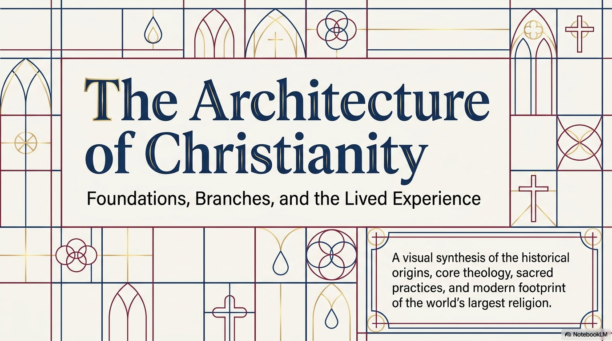
Christianity is the world's largest religion and one of the major religious traditions studied in World Religions 30. Its central focus is not simply a legal code, a philosophy, or a cultural identity. Christianity is centered on the life, teachings, death, and resurrection of Jesus of Nazareth. Christians understand Jesus as the Christ or Messiah, a teacher, a saviour, and the one whose life reveals God.
The word 'architecture' is a useful way to organize the tradition. Christianity has foundations: Jesus, the gospel, discipleship, sacred texts, and core teachings. It also has structures: churches, sacraments, worship patterns, symbols, holy days, and denominations. Finally, it has a lived experience: Christians practice faith through prayer, worship, ethical action, community service, and participation in religious life.
Christianity is not one single cultural expression. It exists in many languages, countries, denominations, and styles of worship. Catholic, Orthodox, and Protestant Christianity are major branches, but each branch contains further diversity. Despite those differences, Christians usually share a common concern with Jesus, the Bible, worship, moral life, and the hope of reconciliation and new life with God.
2. Jesus of Nazareth and the Gospel
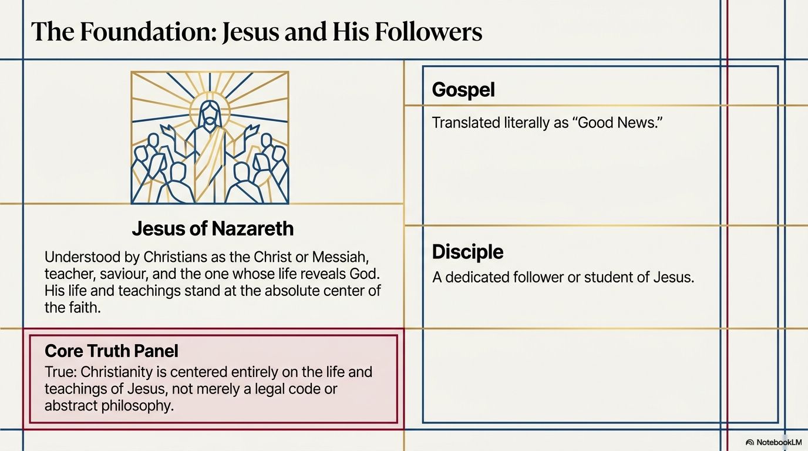
Jesus of Nazareth is the central figure of Christianity. Christians understand him as the Christ or Messiah, a title that points to his special religious role. He is remembered as a teacher who used stories, sayings, actions, and relationships to communicate the reign of God, moral responsibility, forgiveness, compassion, and trust in God.
The term 'gospel' means 'good news.' In Christianity, the gospel refers to the good news about Jesus and to the message Christians believe he proclaimed. The New Testament also contains four books called Gospels: Matthew, Mark, Luke, and John. These writings tell the story of Jesus' ministry, teachings, death, and resurrection from different theological perspectives.
A disciple is a follower or student. Jesus' earliest followers learned from him, travelled with him, and carried his message into the early Christian community. Discipleship is not just knowing information about Jesus. It means responding to his teachings through faith, moral action, service, and commitment. For Christians, Jesus' importance is personal, communal, and theological: he teaches, reveals God, calls people into a new way of life, and becomes the centre of Christian worship.
3. The Christian Bible
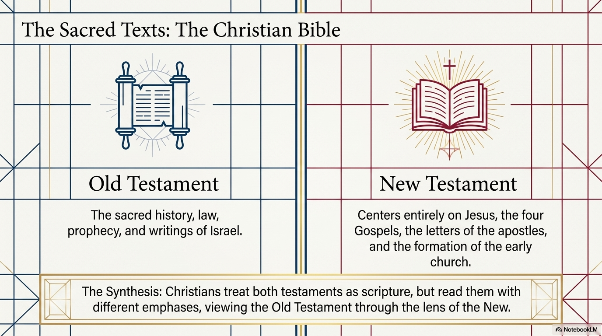
The Christian Bible is made up of two major sections: the Old Testament and the New Testament. The Old Testament contains the sacred history, law, prophecy, poetry, and writings of ancient Israel. It includes stories of creation, covenant, liberation, kingship, exile, worship, wisdom, and prophetic calls for justice and faithfulness. Christians inherited these writings from Jewish tradition, though Judaism and Christianity organize and interpret these texts in different ways.
The New Testament centers on Jesus, the four Gospels, the letters of early Christian leaders, and the formation of the early church. The Gospels tell the story of Jesus. The letters, often called epistles, address the beliefs, conflicts, worship, and moral responsibilities of early Christian communities. The New Testament also includes Acts, which describes the growth of the early church, and Revelation, an apocalyptic text about hope, judgment, and God's ultimate victory.
Christians treat both testaments as scripture, but they read them with different emphases. The Old Testament provides the religious world that shaped Jesus and the first Christians. The New Testament interprets Jesus as the centre of Christian faith. A strong understanding of Christianity recognizes both continuity and difference: Christianity is rooted in the world of Israel's scriptures while also developing its own claims about Jesus, the church, and salvation.
4. The Trinity
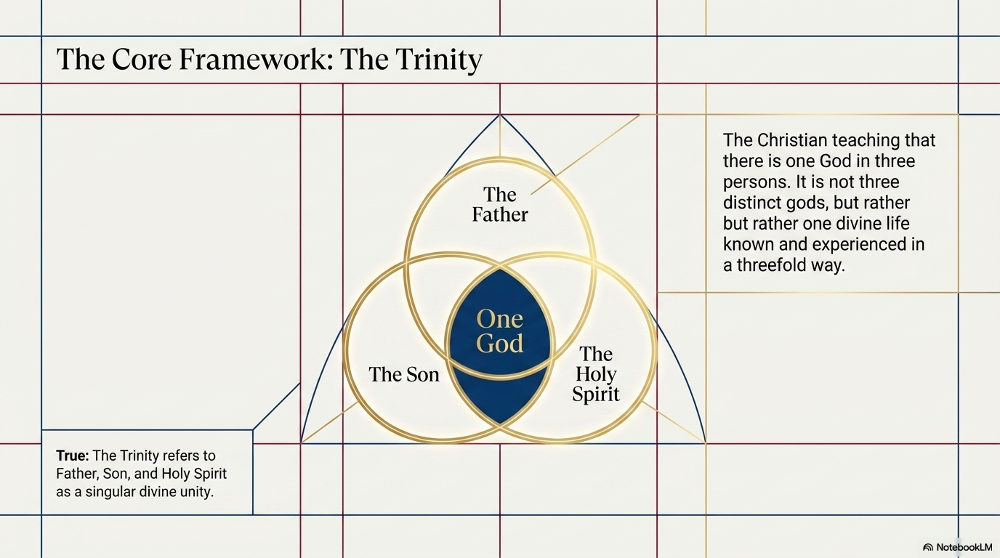
The Trinity is one of Christianity's central theological teachings. It states that there is one God in three persons: Father, Son, and Holy Spirit. This does not mean that Christians worship three separate gods. The teaching is meant to express one divine life known and experienced in a threefold way.
In Christian language, the Father is often associated with God as creator and source. The Son refers to Jesus Christ, understood as God revealed in human life. The Holy Spirit refers to God's active presence that guides, strengthens, inspires, and forms the Christian community. These descriptions are not three unrelated beings; they are ways Christians speak about the one God.
The Trinity matters because it shapes Christian prayer, worship, baptism, and belief. Many Christians are baptized 'in the name of the Father, and of the Son, and of the Holy Spirit.' Christian worship often uses Trinitarian language in blessings, creeds, hymns, and prayers. The doctrine also shapes how Christians understand relationship, love, and divine presence.
5. Crucifixion and Resurrection
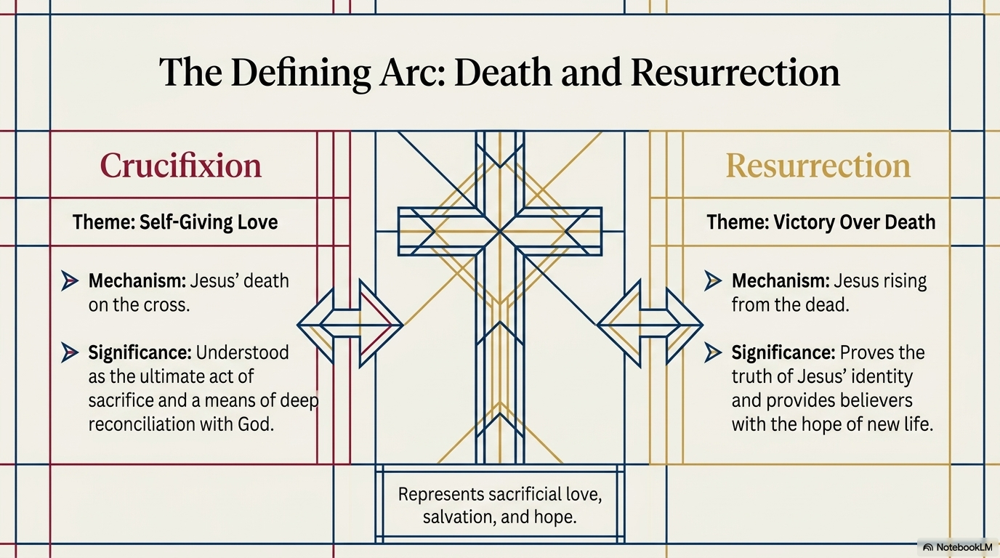
The crucifixion refers to Jesus' death on a Roman cross. Christians understand this event as more than a tragic execution. It is interpreted as an act of self-giving love, a sacrifice, and a means of deep reconciliation with God. The cross became the most recognizable Christian symbol because it represents suffering, love, forgiveness, salvation, and the belief that God is present even in human pain.
The resurrection refers to the Christian belief that Jesus rose from the dead. For Christians, the resurrection is not simply a symbol of optimism. It is the event that confirms Jesus' identity, shows victory over death, and gives believers hope for new life. Easter is the holy day most directly connected with this belief.
Crucifixion and resurrection belong together in Christian thought. The crucifixion emphasizes self-giving love and reconciliation. The resurrection emphasizes victory, hope, and new life. Together they shape Christian worship, ethics, symbols, art, holy days, and teachings about salvation. Without this death-and-resurrection pattern, Christianity loses the central story that gives meaning to its message of good news.
6. Grace and Salvation
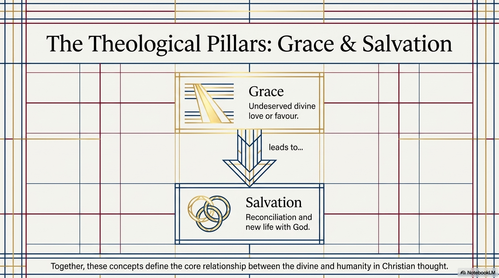
Grace means undeserved divine love or favour. In Christianity, grace communicates that God's love is not simply earned like a wage or purchased like a product. It is given. Different Christian traditions explain grace in different ways, but the central idea is that God acts lovingly toward humanity and invites people into restored relationship.
Salvation is closely connected to grace. It means reconciliation and new life with God. Salvation can include forgiveness, healing, liberation from sin, hope beyond death, and the transformation of the person's life. Some Christians emphasize faith, others emphasize sacraments, others emphasize moral transformation, and many emphasize all of these together. The details differ across traditions, but salvation remains a core Christian concern.
Grace and salvation also influence Christian ethics. If grace is understood as undeserved love, then Christians are called to show mercy, forgiveness, humility, and compassion toward others. If salvation means restored life with God, then Christian life is expected to move outward into service, justice, and care for people who are vulnerable or excluded.
7. The Ethics of Jesus and the Parable Model
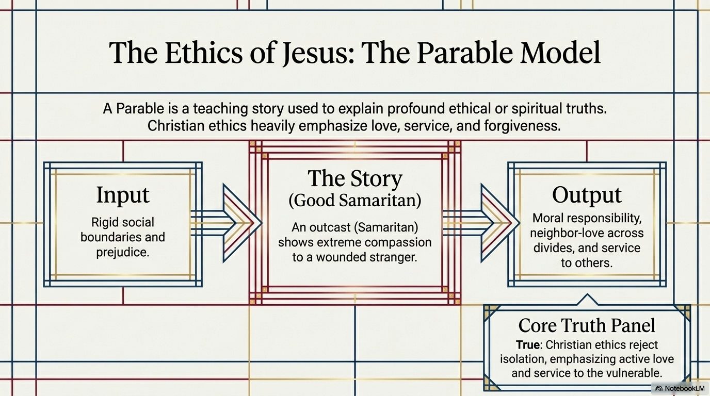
A parable is a teaching story. Jesus used parables to communicate ethical and spiritual truths in a memorable way. Instead of giving only abstract definitions, a parable places listeners inside a situation where they must think about values, choices, and consequences. Parables often challenge assumptions and force listeners to see others differently.
The Good Samaritan is a strong example. In the story, a wounded person is helped by a Samaritan, someone who would have been viewed as an outsider by many of Jesus' original listeners. The story challenges rigid social boundaries and prejudice. Its output is a demand for neighbour-love: moral responsibility that crosses divisions.
Christian ethics often emphasize love, service, forgiveness, compassion, and care for the vulnerable. These values are not meant to remain private feelings. They are expected to become action: feeding the hungry, caring for the sick, welcoming strangers, forgiving others, resisting prejudice, and serving people in need. In Christianity, ethical life is closely tied to the example and teachings of Jesus.
8. Baptism and Eucharist / Communion
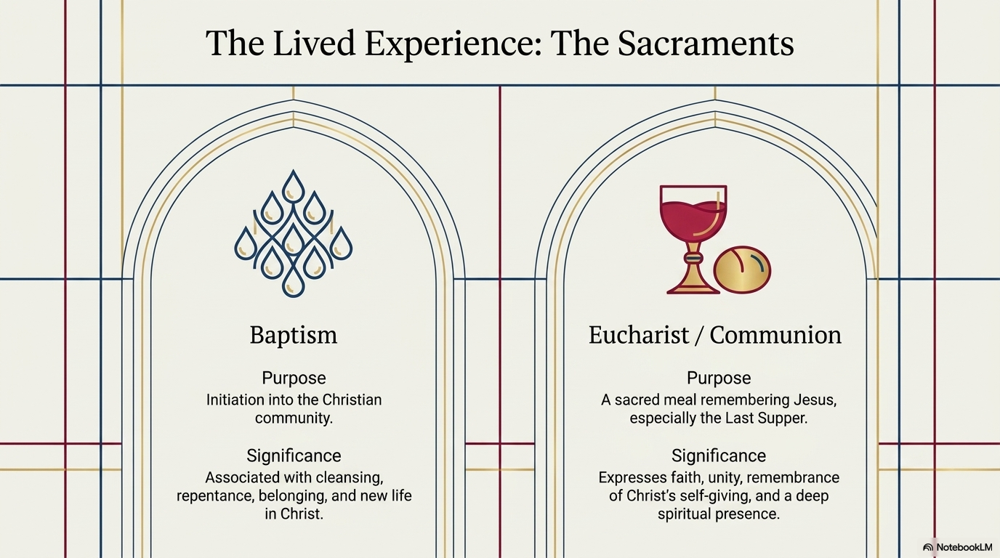
Baptism is commonly associated with initiation into the Christian community. It often uses water and is linked with cleansing, repentance, belonging, and new life in Christ. In many traditions baptism is a sacrament: an outward ritual sign connected to inward spiritual meaning. Some churches baptize infants; others baptize people after a personal profession of faith. Despite those differences, baptism usually marks entry into Christian life.
The Eucharist or Communion is a sacred meal connected to Jesus, especially the Last Supper. Christians share bread and wine, or bread and grape juice, as a way of remembering Jesus' self-giving. The Eucharist expresses faith, unity, remembrance, thanksgiving, and the spiritual presence of Christ. Catholic, Orthodox, and many Protestant Christians all practice some form of this sacred meal, though they explain its meaning differently.
The sacraments show that Christianity is not only a set of ideas. It is embodied through actions, materials, community, and ritual. Water, bread, wine, spoken words, prayer, and shared gathering become ways Christians experience belonging and sacred meaning.
9. Christmas, Easter, and the Christian Year
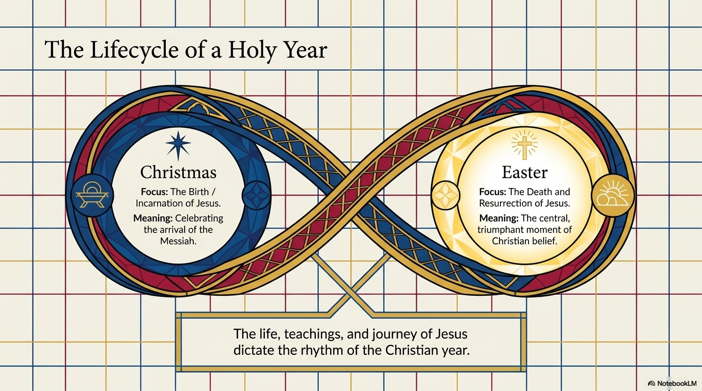
The Christian year gives religious shape to time. It organizes worship and community life around events connected to Jesus. Not all churches follow the same calendar in the same way, but many Christians mark seasons and holy days that teach the story of Christian faith.
Christmas celebrates the birth of Jesus and the belief in the incarnation: God becoming known in human life through Jesus Christ. Christmas is associated with joy, light, hope, gift-giving, worship, and the arrival of the Messiah. In Canada, Christmas has also become a public cultural holiday, even for many people who do not practice Christianity.
Easter is the major Christian holy day centered on Jesus' death and resurrection. It is often considered the central triumphant moment of Christian belief because it expresses hope, victory over death, and new life. Easter is connected to Holy Week, Good Friday, and the resurrection celebration. Together, Christmas and Easter show two core claims of Christianity: God enters human life, and God brings life out of death.
10. Catholic, Orthodox, and Protestant Christianity
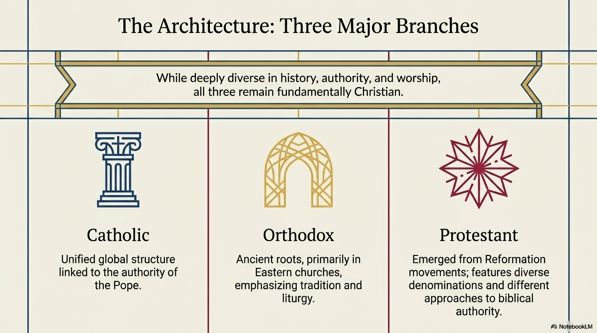
Christianity is internally diverse. Three major branches are Catholic, Orthodox, and Protestant Christianity. These branches developed through centuries of history, theological debate, cultural change, and institutional separation. A respectful understanding avoids pretending that all Christians are identical.
Catholic Christianity is connected with a worldwide structure of bishops and the authority of the pope. Catholic worship gives major importance to the sacraments, especially Eucharist, and to continuity with tradition. Orthodox Christianity has ancient roots, especially in Eastern Christian communities. It emphasizes sacred tradition, liturgy, icons, bishops, and continuity with the early church. Protestant Christianity emerged from Reformation movements in Western Europe and now includes many denominations. Protestants often emphasize scripture, preaching, personal faith, and different forms of church authority.
These descriptions are starting points, not complete definitions. Each branch includes internal diversity. Still, the comparison is useful: Catholicism is often associated with the pope and sacramental unity; Orthodoxy with ancient eastern liturgy and tradition; Protestantism with Reformation movements and denominational diversity. All three share a Christian focus on Jesus, scripture, worship, and the life of the church.
Quick comparison of the three major branches
| Branch | Common emphasis | Examples |
|---|---|---|
| Catholic | Pope, bishops, sacraments, worldwide structure | Roman Catholic parish, Mass, Catholic schools or charities |
| Orthodox | Ancient eastern roots, liturgy, icons, tradition | Greek, Ukrainian, Russian, Antiochian, or other Orthodox churches |
| Protestant | Reformation roots, many denominations, scripture and preaching emphasized in many communities | Anglican, Lutheran, Baptist, Pentecostal, Mennonite, United Church, and others |
11. The Church as Community and Place
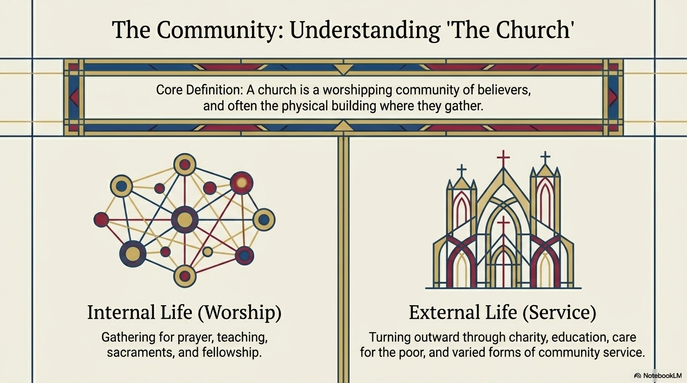
The word church can mean more than a building. At its core, a church is a worshipping community of believers. It is the gathered community that prays, learns, celebrates sacraments, supports one another, and lives out Christian identity. A church building matters because it gives that community a physical place to gather, but the community is the deeper meaning.
The internal life of the church includes worship, prayer, teaching, sacraments, music, preaching, fellowship, and spiritual formation. These practices shape Christian identity and help members understand their beliefs. Different branches and denominations worship in different ways, from highly formal liturgies to informal prayer and preaching services.
The external life of the church turns outward through service. Churches may operate charities, food banks, shelters, schools, hospitals, counselling programs, refugee support, youth programs, and community ministries. Christian service is connected to the teachings of Jesus about love of neighbour, care for the poor, and compassion for people in need.
12. Christianity in Canada and the Wider World
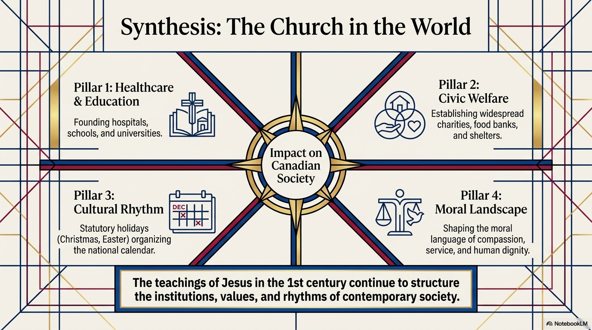
Christianity has had a major historical influence on Canadian society. Churches helped establish schools, universities, hospitals, charities, food banks, shelters, and community organizations. Christian holy days such as Christmas and Easter shaped the public calendar and continue to influence Canadian cultural rhythms.
Christianity has also influenced Canadian moral language. Ideas such as compassion, service, human dignity, forgiveness, charity, and care for the vulnerable have often been expressed through Christian institutions and communities. Many Canadian communities still contain churches that function as places of worship, cultural memory, and social service.
A serious understanding also has to be honest about complexity. Christian institutions have sometimes contributed to harm, exclusion, colonialism, and injustice, including church involvement in residential schools. That does not erase Christian service, and Christian service does not erase historical harm. Responsible study looks at both influence and accountability. Christianity in Canada is part of a pluralistic society where many religious and non-religious traditions live alongside one another.
13. Researching Christian Art, Music, Symbols, and Communities
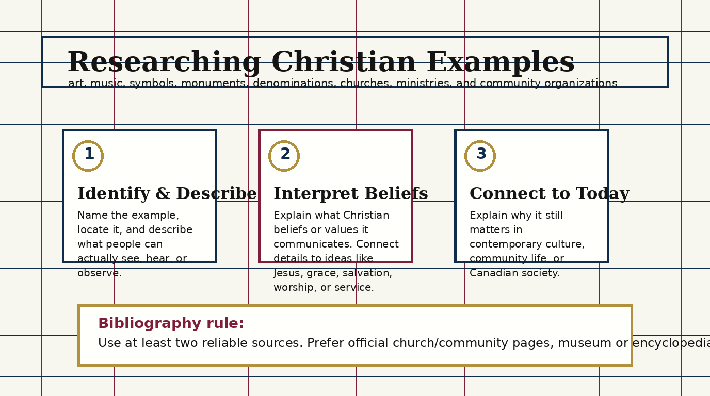
Christianity is expressed through art, music, symbols, monuments, denominations, churches, ministries, and community organizations. A strong research response does not simply name an example. It describes the example in concrete detail, explains what Christian beliefs or values it communicates, and shows why it still matters.
For art, music, symbols, or monuments, start with observable detail. What does it look or sound like? Where is it located? Who created it or uses it? What symbols appear? Then interpret the meaning. A cross may communicate crucifixion, sacrificial love, salvation, hope, and resurrection. A hymn may communicate praise, grief, gratitude, faith, or hope. A church building may communicate sacred space, community memory, and worship. Stained glass, icons, statues, or paintings often teach biblical stories and theological ideas visually.
For a denomination, church, ministry, or community organization in Canada, describe the group accurately. Identify its branch or tradition if possible. Explain how beliefs appear through worship, service, sacraments, music, preaching, education, charity, or daily practice. Then name a contribution it makes to Canadian society, such as food support, refugee sponsorship, health care, education, community gathering, spiritual care, or advocacy.
Use reliable sources. Strong sources include official church or organization websites, museum pages, encyclopedia entries, academic or library resources, and carefully selected books or articles. Avoid sources that are anonymous, promotional without detail, hostile without evidence, or unclear about authorship. A bibliography should include enough information for someone else to find the sources: author or organization, title, website or publisher, and access date when using web sources.
Reliable-source checklist
| Checklist item | What to look for |
|---|---|
| Clear identity | The author, church, organization, museum, school, or publisher is named. |
| Relevant authority | The source has a reason to know the topic: official community page, museum, encyclopedia, scholar, or credible publication. |
| Concrete detail | The source gives facts, dates, descriptions, beliefs, practices, or context that can be used in your own words. |
| Balanced use | At least two sources are used so the response is not built from one website only. |
| Bibliography information | The source gives enough detail to cite it: title, organization or author, website or publisher, and access date for web sources. |
Chapter 7 Glossary
| Term | Meaning |
|---|---|
| Apostle | An early Christian messenger or leader, often connected to those sent to spread the message of Jesus. |
| Baptism | A Christian rite associated with initiation, cleansing, repentance, belonging, and new life. |
| Bible | The central Christian collection of sacred texts, usually divided into Old Testament and New Testament. |
| Catholic | A major branch of Christianity linked with the pope, bishops, sacraments, and worldwide church structure. |
| Christ / Messiah | A title Christians use for Jesus, meaning the anointed one or chosen deliverer. |
| Christmas | A holy day celebrating the birth or incarnation of Jesus. |
| Church | A worshipping Christian community and often the physical building where that community gathers. |
| Communion | Another common term for Eucharist, the sacred meal remembering Jesus. |
| Crucifixion | Jesus' death on the cross. |
| Denomination | A distinct Christian group or tradition. |
| Disciple | A follower or student of Jesus. |
| Easter | A holy day centered on Jesus' death and resurrection. |
| Epistle | A New Testament letter to a Christian community or individual. |
| Eucharist | A sacred meal connected to the Last Supper, remembrance, thanksgiving, unity, and Christ's self-giving. |
| Gospel | Good news; also one of the four New Testament accounts of Jesus' life and teachings. |
| Grace | Undeserved divine love or favour. |
| Holy Spirit | God's active presence in the world and Christian community. |
| Incarnation | The belief that God became known in human life through Jesus Christ. |
| Liturgy | A formal pattern of worship used by a religious community. |
| New Testament | Christian writings centered on Jesus and the early church. |
| Old Testament | The first major section of the Christian Bible, containing the sacred history, law, prophecy, and writings of Israel. |
| Orthodox | A major branch of Christianity with ancient eastern roots, tradition, icons, and liturgy. |
| Parable | A teaching story used to communicate moral or spiritual truth. |
| Protestant | A broad branch of Christianity connected to Reformation movements and many denominations. |
| Reconciliation | Restored relationship between humanity and God. |
| Resurrection | The Christian belief that Jesus rose from the dead. |
| Sacrament | A sacred ritual sign connected to spiritual meaning and grace. |
| Salvation | Reconciliation and new life with God. |
| Trinity | The Christian teaching that there is one God in three persons: Father, Son, and Holy Spirit. |